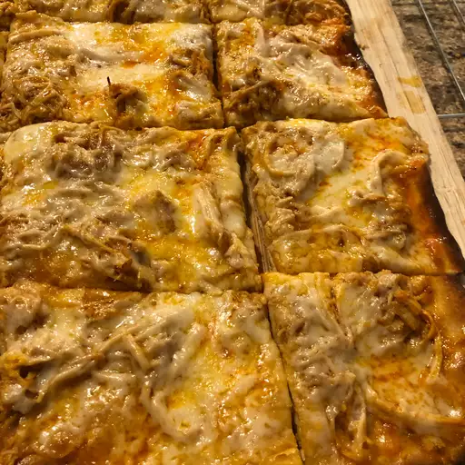

Slow Cooker Buffalo Chicken Sandwiches

This mouthwatering recipe is perfect for game day
This mouthwatering recipe is perfect for game day or any casual get-together. Chicken breasts are slow-cooked in a spicy buffalo sauce until they are tender and juicy. The chicken is then shredded and piled high on a soft roll or bun, along with crunchy coleslaw and a creamy blue cheese dressing. The result is a sandwich that is tangy, spicy, and bursting with flavor. Easy to make and sure to please a crowd, these Slow Cooker Buffalo Chicken Sandwiches are a must-try for any buffalo chicken fan.
Ingredients
- 1 (17.5 fluid ounce) bottle Buffalo wing sauce, divided
- ½ (1 ounce) package dry ranch salad dressing mix
- 2 tablespoons butter
- 6 hoagie rolls, split lengthwise
Steps
- Place chicken breasts into the slow cooker; pour in 3/4 of the wing sauce and ranch dressing mix.
- Cover and cook on Low for 6 to 7 hours.
- Shred chicken in the cooker with two forks. Stir in butter.
- Pile shredded chicken and sauce onto hoagie rolls. Serve with remaining Buffalo sauce and bleu cheese (optional).